O Salteador
O Highwayman rouba dos ricos. E os pobres. E especialmente os mortos recentemente.


Na violência sombria da Revolução Francesa, o conde Lucien Degas viveu em Paris em esplendor decadente. Mas à noite, o misterioso Highwayman persegue as estradas com sua gangue, atacando os viajantes sem piedade. Isto é, até que o preço da cabeça de sua gangue subiu para cem mil francos. Então Lucien promoveu seu segundo em comando e entregou todos eles para a recompensa. Ele sempre desprezou dividir seu saque com os inferiores, de qualquer maneira. E, de fato, foi como artista solo que The Highwayman se tornou uma figura de pavor lendário. Confiando em sua própria rapidez sobrenatural e determinação implacável, ele tentou todo tipo de crime para financiar sua pródiga vida. Sequestro, roubo de banco, manipulação de raça, falsificação de arte, assassinato de cavalo, nada estava abaixo de Lucien. Ele causou estragos até que seu nome se tornou sinônimo de avareza e violência. Em Valhalla, Lucien continua a tramar ouro e poder. Ele sabe que o torneio é a maneira mais segura de ganhar influência aqui e vai recorrer a todos os meios necessários para vencer.
 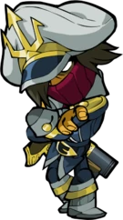
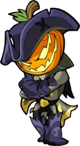
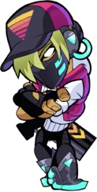
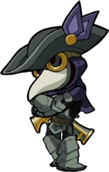
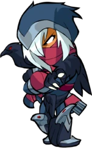
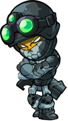
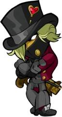
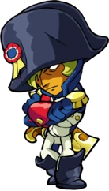
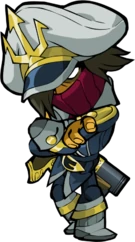
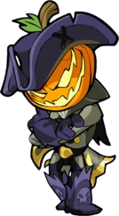
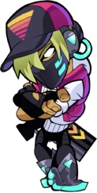
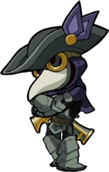
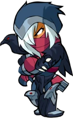
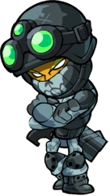
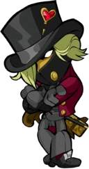
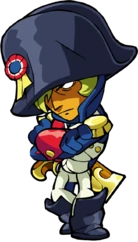